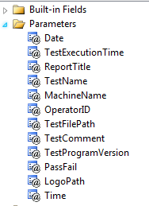

A ".\Report" sub-directory is installed under the AcitvATE installation directory. This directory contains some customization files that may be changed to personalize the Report Title and Report Logo.
Report Logo:
Users can customize the report logo by
replacing the “ReportLogo.jpg” file with a company logo of their own choosing.
The logo will be resized to fit the logo area.
If this file is missing,
the default ActivATE logo will be used.
Report Title:
You can override the default report title by
removing the underscore “_” from the “_ReportTitle.txt” file and replacing the
text in this file with your own title.
Program logic checks for the file “ReportTitle.txt”.
If this file exists (hence, the underscore to
rename it), then the contents of the file is read and used as the title.
If this file does not exist, then a default
title is used.
Report Definition (Advanced):
If “ReportDefn.rdlc” exists, then this file is
used for the report layout rather than the default report file.
This file is installed in the ".\Report" sub-directory of the ActivATE
installation directory. Note the
underscore “_” on this file.
This effectively renames the file so it does
not exist and the default embedded resource is used.
Remove the underscore to use this file as the
report layout.
|
The entire layout of the
report can be changed by editing the “ReportDefn.rdlc” file using
Microsoft Visual Studio (2008 or later).
Users should be familiar with Microsoft ReportViewer before
changing this file. Do not
delete any of the parameters (shown at right) but it is OK to remove the
text box containing the parameter expression.
For example, deleting the text box containing [@TestComment] will
simply remove that display from the report. Note: The report form uses the ResultsDataSet.
Do not delete any of the fields from this data set. |
 |
see Also: Test Results File | Back to Main
Astronics Test Systems
Last updated on 11/18/14 by M. Buccat